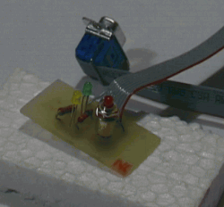
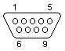
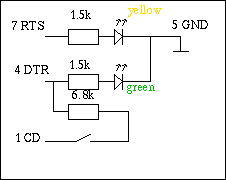
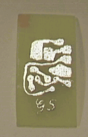

A serial line computer shutdown button and LED
ArticleCategory: [Choose a category for your article]
Hardware
AuthorImage:[Here we need a little image from you]
![[Photo of the Author]](../../common/images/Guido-S.gif)
TranslationInfo:[Author and translation history]
original in en Guido
Socher
AboutTheAuthor:[A small biography about the author]
Guido is a long time Linux fan. Most of the time he develops
software or works for _LF_, but from time to time he likes to
design hardware parts.
Abstract:[Here you write a little summary]
In this article we design a little push button to connect to your
server on the serial line. You can use it to shut the machine down
when needed.
ArticleIllustration:[This is the title picture for your
article]

ArticleBody:[The article body]
Introduction
A real server machine does normally not need any keyboard,
monitor or mouse. It needs a good operating system, like Linux, and
a network card. External devices like mouse and keyboard disturb
only. With Linux running on the machine, remote administration is
the best and most convenient solution.
When I buy a computer I always verify that it has an BIOS option
to not check for keyboard at startup. All good motherboard
manufactures have that option today. Some that still think people
run only Windows on their machines require a keyboard at startup
but that is a different story and I don't recommend to buy such
hardware.
Such a computer without keyboard and monitor is the perfect
computer for a firewall, a web-server, a NFS file server, a
mail-server, an ADSL gateway computer etc. It does not have to be a
powerful machine. An old pentium 100Mhz with enough RAM will easily
serve a hundred and more other machines.
Having no keyboard connected is nice and convenient because the
server is then just a small box that fits somewhere in the corner
or on a shelf in the cellar. Sometimes you would however like to
have a button to properly shut it down without logging first in and
running the shutdown command. It could be that you are already in
the server room and the next workstation is 100 meters away or you
have somebody who has physical access to the machine but no root
password and that person needs to shutdown the computer before
taking away the power supply.
Just powering it off is no good idea because you might loose
data and the disk check during start up takes then very long
time.
The solution is the small and inexpensive serial device
presented in this article.
The device
We will build a small device with 2 LEDs and one pushbutton. A
green LED will indicate when the pushbutton is active and a slowly
blinking yellow LED indicates that the server is working or still
in the process of shutting down. To shut down the server you press
the pushbutton for 3 seconds.
When you press the pushbutton then the green LED will go off
indicating the shutdown is in progress. The command "/sbin/shutdown
-t2 -h now" is now executing. The yellow LED continues blinking
while the server is still shutting down. When the yellow LED stops
blinking then you should still wait 10 seconds before you power off
the computer. The yellow LED stops when all processes are killed
and the disks are being unmounted.
If your computer supports automatic power off then you do not have
to worry about the 10 seconds. Just wait until it has switched off
it self.
The serial line
The interesting thing about of the serial interface is that it has
a number of pins which you can control via ioctl system calls. This
means that you do not need to modify anything in the kernel to
control a LED connected to the serial line or to read out the state
of a push button. The serial line has just enough power to drive 2
low power LEDs. We will use the RTS and DTR pins to connect the
LEDs to and the Carrier Detect line will be used to read the state
of the push button.

9 PIN D-SUB MALE at the Computer.
| 9 PIN-connector |
25 PIN-connector |
Name |
Dir |
Description |
| 1 |
8 |
CD |
input |
Carrier Detect |
| 2 |
3 |
RXD |
input |
Receive Data |
| 3 |
2 |
TXD |
output |
Transmit Data |
| 4 |
20 |
DTR |
output |
Data Terminal Ready |
| 5 |
7 |
GND |
-- |
System Ground |
| 6 |
6 |
DSR |
input |
Data Set Ready |
| 7 |
4 |
RTS |
output |
Request to Send |
| 8 |
5 |
CTS |
input |
Clear to Send |
| 9 |
22 |
RI |
input |
Ring Indicator |
The circuit
You need the following parts to build this shutdown button with
LEDs.
- 1 green low power LED (a normal LED will also work but it will
not be as bright)
- 1 yellow low power LED
- 2 resistors 1.5K Ohm
- 1 resistor 6.8K Ohm
- 1 small push button
- 1 female RS232 serial line connector with cable
 The parts
are connected together as shown in the circuit diagram. The voltage
levels on the serial lines is +/- 10Volts. The 1.5K Ohm resistors
are exactly right for low power LEDs but normal LEDs will also do.
I don't recommend to change resistors or use external power supply
since the serial line control chips are part of the motherboard's
chip set. If you burn them then you will need to change the entire
motherboard.

The above image shows the etched circuit board. I don't have an
exact board layout for you because I prefer to do small circuits as
free hand drawing directly on the board with etch resistant
ink.
The final circuit with all parts is shown on the picture at the
top of this article. You can carefully drill 3 holes into the front
panel of your server. Two 3mm holes for the LEDs and one to screw
in the push button. The whole circuit is very light and the screw
of the push button will be enough to hold it.
The software
The software is a small daemon process. Which can be started via a
script from /etc/rc.d/rc3.d/. It uses the ioctl(fd, TIOCMSET,...)
and ioctl(fd, TIOCMGET, ...) functions to read from and write to
the serial port. You can download sled-0.1.tar.gz. A
makefile and installation instructions are included.
Happy soldering